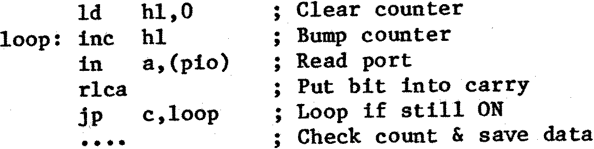

80-Bus News |
January–February 1984 · Volume 3 · Issue 1 |
| Page 39 of 55 |
|---|
error. The INT input to the Z80 is level sensitive. i.e. While the /INT signal is low an interrupt will occur immediately interrupts are enabled. I cannot conceive of how the /INT pin could be reasonably used to measure the duration of pulses. (The only thing that comes to mind is a service routine that starts EI, NOP, followed by code that counts the number of return addresses that have been pushed onto the stack by the successive interrupts – hardly a practical proposition.) The situation with the NMI input is virtually the same. The only difference is that it is an edge triggered input. The NMI is generated on the high-to-low transition of the signal on this pin and the low-to-high transition has no effect. Therefore a program could collect statistics of the frequency of occurrence of the pulses, but could not determine anything about their duration. Neither pin is suitable for the measurement of pulse widths.
The obvious canditate for this task is the PIO. It can be set into mode 3 (control mode) and the levels present on one or more of the external inputs can be monitored by the control software. But before anything can be done we need to know something about the characteristics of the pulses that are to be monitored. Obviously if they are very short (of the order of luS) and very frequent there is no way that the Z80 can be used for this purpose. Pulses of milliseconds or seconds duration can be measured relatively easily, but a few calculations should be done to determine the relative accuracy obtainable, and whether it is acceptable.
A simple timing loop could be:

With this there is obviously an uncertainty equal to the software loop time in determining when the pulse goes OFF. (It could go OFF just before or just after the IN instruction is executed. In the latter case another complete loop is executed although the time difference between the two cases could only be nanoseconds.) Similarly there can be a similar uncertainty in recognising the ON instant. The basic unit measurement here is the ‘LOOP’ (above) and we can measure to an accuracy of +/ 2 LOOPS.
The above is a very simplified view of matters as there is also the problem of measuring the intervals between pulses. (Note also the above loop assumes that a 16-bit counter is adequate as the loop counter. For long pulses this is unlikely to be so, and the loop will have to be expanded to include an overflow check of the counter. However, as the pulse is longer, we can accept a greater absolute error as the relative error will still probably be small.)
The only thing to do is to sit down and write some of the software and start counting clock cycles. You may find it advantageous to add dummy instructions into some conditional paths so that all routes from point A in the software to point B take about the same amount of time. That way a software timer-counter can be updated with a fixed number to compensate for the execution of a particular service routine. (e.g. The routine that takes the last pulse measurement and updates a histogram table based upon the pulse width in ‘loop counts’.)
Life may be easier if you use an I/O board which includes a CTC (Counter Timer Circuit).
| Page 39 of 55 |
|---|